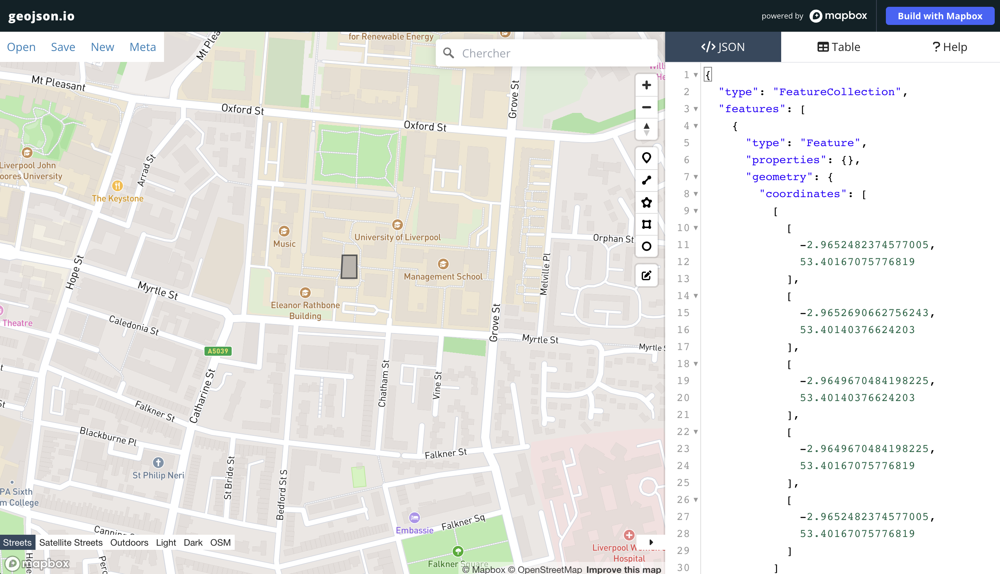
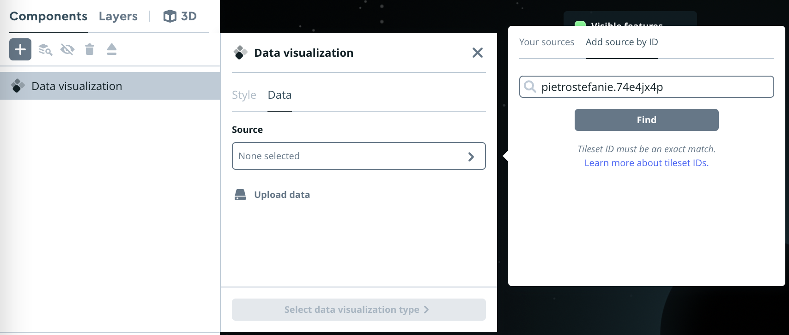

import geopandas as gpd4 Data Architectures and Tiles
The Lecture slides can be found here.
This lab’s notebook can be downloaded from here.
In this lab, we will explore and familiarise with some of the most common data formats for web mapping: GeoJSON and Mbtiles.
4.1 GeoJSON
To get familiar with the format, we will start by creating a GeoJSON file from scratch. Head over to the following website:
In there, we will create together a small example to better understand the building blocks of this file format.

We will pay special attention to the following aspects:
- Readability.
- Coordinate system.
- Ability to add non-spatial information attached to each record.
- How to save it as a file.
Excercise:
Create a GeoJSON file for the following data and save them to separate files:
- Your five favourite spots in Liverpool
- A polygon of what you consider to be the boundary of the neighbourhood where you live and the city centre of Liverpool. Name each.
- A route that captures one of your favourite walks around the Liverpool region
If you are comfortable, upload the files to Microsoft Teams to share them with peers.
4.1.1 GeoJSON in Python
With the files from the exercise at hand, we will learn how to open them in a Python environment. Then, let’s begin by importing the necessary libraries; geojson is used for handling GeoJSON files.
Now, place the geojson files you have created in the data folder used in these sessions. As always, the data folder should be stored in the directory where the notebook is running from. For this example, we will assume that the file is called map.geojson. We can read the file as:
liverpool = gpd.read_file("../data/map.geojson")
liverpool.head()We can also plot and explore the content of the GeoDataFrame with Folium. Folium, which we will see more in detail later on, helps create interactive maps from data stored in geopandas.GeoDataFrame.
import folium
liverpool_centroid = (53.41058, -2.97794)
# Create a Folium map centered around this point
map = folium.Map(location=liverpool_centroid, zoom_start=13, tiles="CartoDB.DarkMatterNoLabels")
# Add the liverpool data to the map, this will plot each geometry in the GeoDataFrame
folium.GeoJson(liverpool).add_to(map)
mapOnce read, the geojson behaves exactly like any GeoDataFrame we have seen so far. We can therefore operate on it and tap into the functionality from pandas and geopandas. For example, we can and reproject the layer to the to British National Grid.
liverpool_bng = liverpool.to_crs(crs = "EPSG: 27700")When we inspected our geojson, we noted that the spatial data is stored in the following format POINT (-2.977367 53.40753). This is called “well known text” (wkt) and is a representation that spatial databases like PostGIS use as well. Another way to store spatial data as text for storage or transfer, less (human) readable but more efficient is the “well known blurb” (wkb). We can use the shapely library to handle the WKT representation of the geometry and then convert it to WKB format.
from shapely import wkt
from shapely.geometry import Point
import shapely.wkb
# Load the WKT representation of the point
wkt_string = "POINT (-2.977367 53.40753)"
# Convert the WKT representation into a Shapely Point object
point = wkt.loads(wkt_string)
# Convert the Point object into WKB format
wkb_data = shapely.wkb.dumps(point)
wkb_data.hex()Excercise: - Read the GeoJSON created for your favorite walks in Liverpool and calculate their length
Once you are happy with the data as we will hypothetically need it, you can write it out to any other file format supported in geopandas. For example, we can create a Geopackge file with the same information. For this, we can use the function to_file. See an example below:
# Write 'liverpool_bng' to a GeoPackage file
liverpool_bng.to_file("../data/liverpool_bng.gpkg", layer="liverpool_bng", driver="GPKG")4.2 Tilesets and Mbtiles
In this section we will dive into the concept of tiles to understand why they have been so transformative in the world of web mapping. We have already seen the usage of tilesets above with folium and with contextily (although within a static context). We will see that folium, integrates different tileset options already.
For this section, let’s start by getting the building footprints from OpenStreetMap with osmnx
import osmnx as ox
tags = {"building": True} #OSM tags
buildings = ox.features_from_place("Liverpool, UK", tags = tags)
buildings = buildings.reset_index()
# sometimes building footprints are represented by Points, let's disregard them
buildings = buildings[(buildings.geometry.geom_type == 'Polygon') | (buildings.geometry.geom_type == 'MultiPolygon')]buildings.plot()
Let’s save the GeoDataFrame a geojson and call it buildings_liverpool.geojson.
buildings[['osmid','geometry']].to_file('data/buildings_liverpool.geojson', driver='GeoJSON')Then, register for a MapBox account here.
4.2.1 Optional: Generating .mbtiles in Python
In Python, you can use togeojsontiles to make dynamic .mbtiles files. This is useful to visualize large data appropriately at any zoom level. This step cannot be ran on University Machines It requires the installation of tippecanoe on your machine. Follow the corresponding instructions for Windows and for MAC
pip install togeojsontiles
from togeojsontiles import geojson_to_mbtiles
TIPPECANOE_DIR = '/usr/local/bin/'
# Convert GeoJSON to .mbtiles
togeojsontiles.geojson_to_mbtiles(
filepaths=['/data/buildings_liverpool.geojson'],
tippecanoe_dir=TIPPECANOE_DIR,
mbtiles_file='liverpool.mbtiles',
maxzoom=14)You can also try uploading it directly to Mapbox. This part of the code has not been tested so it should serve as guidance.
import requests
import os
# Define your Mapbox token
mapbox_token = ""
# Endpoint for Mapbox Tiling Service uploads
url = 'https://api.mapbox.com/uploads/v1/mapbox'
# Path to your .mbtiles file
mbtiles_file_path = "../data/liverpool.mbtiles'
# Prepare the headers
headers = {
'Authorization': f'Bearer {MAPBOX_ACCESS_TOKEN}',
'Content-Type': 'application/json'
}
# Prepare the data for the POST request
with open(mbtiles_file_path, 'rb') as file:
files = {'file': file}
response = requests.post(url, headers=headers, files=files)
# Check the response
if response.status_code == 200:
print("Upload initiated successfully.")
print(response.json())
else:
print("Failed to initiate upload.")
print(response.text)The optional steps end here
4.2.2 Uploading to Mapbox Studio:
After creating the .mbtiles file, you can upload it manually to Mapbox Studio (unless you managed to make the cell above work):
- Navigate to Mapbox Studio.
- Start a New Style and chose a template (Monochrome, blank etc.)
- Upload the
liverpool.mbtiles(if you created it) or theliverpool.geojson. Press the + symbol,Custom LayerorData Visualisation,Upload Data, and choose your file

- Once uploaded, you should see your layer in the existing sources.
- Style it according to your requirements: It should look like a nicer version of this:
Or through scripting with Mapbox’s Uploads API (see above)
4.2.3 Visualizing the Tiles with Folium:
First, we need to get the id of your Mapbox style by copying its url:
url example: mapbox://styles/gabrif/clrpby9lc00a501pecacz8b7h
the style_id is the last section of the URL, in this case clrpby9lc00a501pecacz8b7h
Then, we can use folium, which we will more in detail later on, and use our tileset. Folium essentially allows us to create interactive maps, usually starting from data stored in a GeoDataFrame. While folium provides a series of built-in tilesets, here it is demonstrated how to employ one’s own.
# Create a Folium map centered at a specific location
import folium
mapbox_user = 'gabrif'
mapbox_token = ''
style_id = 'clrpby9lc00a501pecacz8b7h'
tiles = 'https://api.mapbox.com/styles/v1/'+mapbox_user+'/'+style_id+'/tiles/256/{z}/{x}/{y}?access_token='+mapbox_token
map = folium.Map(location=[53.406872, -2.973286], zoom_start=14,
tiles=tiles,
attr='Mapbox')
# Display the map
mapMake this Notebook Trusted to load map: File -> Trust Notebook